2024 National 5 Physics marking instructions
Source: Scottish Qualifications Authority (SQA) / Qualifications Scotland. This is a StemInteract HTML companion, not an official HTML edition. Selectable text is supplied alongside original page images. Use the images or original PDF for equations, powers, fractions, vector notation, tables and diagrams; text extraction cannot fully preserve mathematical layout.
Jump to a question
PDF page 1
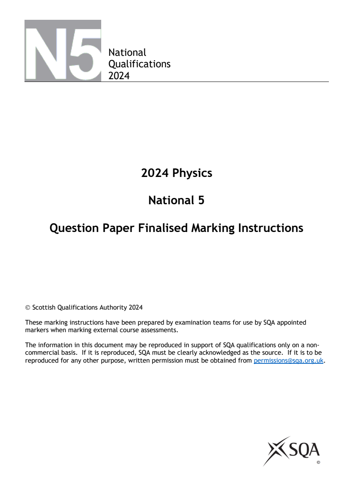
Selectable page text
National
Qualifications
2024
2024 Physics
National 5
Question Paper Finalised Marking Instructions
Scottish Qualifications Authority 2024
These marking instructions have been prepared by examination teams for use by SQA appointed
markers when marking external course assessments.
The information in this document may be reproduced in support of SQA qualifications only on a non-
commercial basis. If it is reproduced, SQA must be clearly acknowledged as the source. If it is to be
reproduced for any other purpose, written permission must be obtained from permissions@sqa.org.uk.PDF page 2
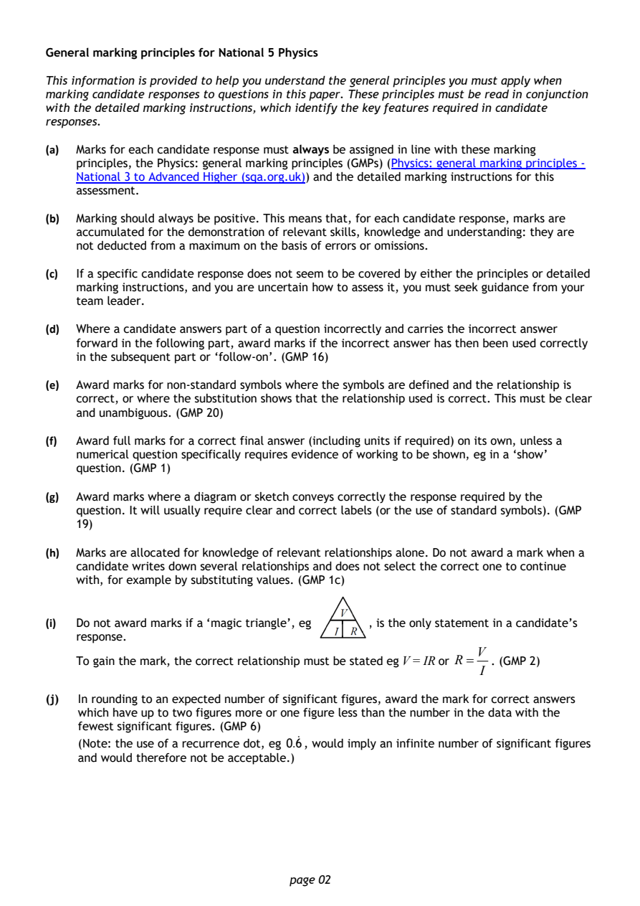
Selectable page text
General marking principles for National 5 Physics
This information is provided to help you understand the general principles you must apply when
marking candidate responses to questions in this paper. These principles must be read in conjunction
with the detailed marking instructions, which identify the key features required in candidate
responses.
(a) Marks for each candidate response must always be assigned in line with these marking
principles, the Physics: general marking principles (GMPs) (Physics: general marking principles -
National 3 to Advanced Higher (sqa.org.uk)) and the detailed marking instructions for this
assessment.
(b) Marking should always be positive. This means that, for each candidate response, marks are
accumulated for the demonstration of relevant skills, knowledge and understanding: they are
not deducted from a maximum on the basis of errors or omissions.
(c) If a specific candidate response does not seem to be covered by either the principles or detailed
marking instructions, and you are uncertain how to assess it, you must seek guidance from your
team leader.
(d) Where a candidate answers part of a question incorrectly and carries the incorrect answer
forward in the following part, award marks if the incorrect answer has then been used correctly
in the subsequent part or ‘follow-on’. (GMP 16)
(e) Award marks for non-standard symbols where the symbols are defined and the relationship is
correct, or where the substitution shows that the relationship used is correct. This must be clear
and unambiguous. (GMP 20)
(f) Award full marks for a correct final answer (including units if required) on its own, unless a
numerical question specifically requires evidence of working to be shown, eg in a ‘show’
question. (GMP 1)
(g) Award marks where a diagram or sketch conveys correctly the response required by the
question. It will usually require clear and correct labels (or the use of standard symbols). (GMP
19)
(h) Marks are allocated for knowledge of relevant relationships alone. Do not award a mark when a
candidate writes down several relationships and does not select the correct one to continue
with, for example by substituting values. (GMP 1c)
(i) Do not award marks if a ‘magic triangle’, eg , is the only statement in a candidate’s
response.
V
To gain the mark, the correct relationship must be stated eg V = IR or R = . (GMP 2)
I
(j) In rounding to an expected number of significant figures, award the mark for correct answers
which have up to two figures more or one figure less than the number in the data with the
fewest significant figures. (GMP 6)
(Note: the use of a recurrence dot, eg 0.6, would imply an infinite number of significant figures
and would therefore not be acceptable.)
page 02PDF page 3
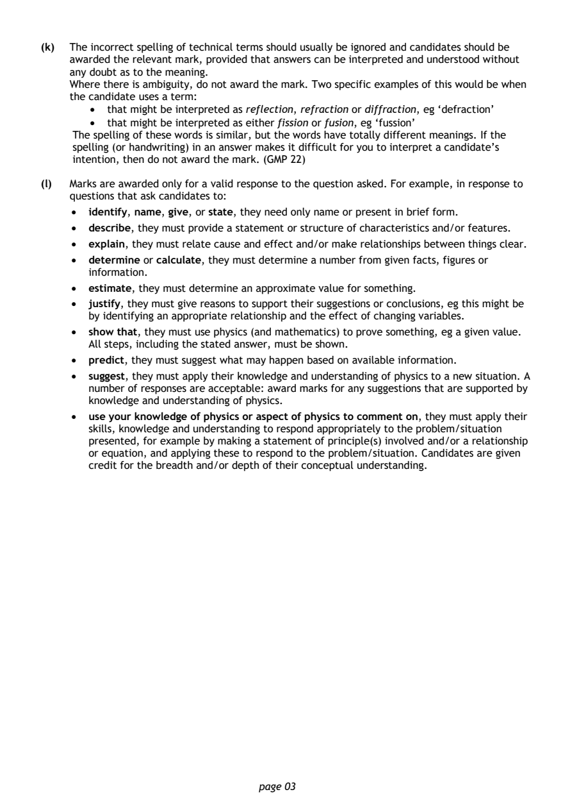
Selectable page text
(k) The incorrect spelling of technical terms should usually be ignored and candidates should be
awarded the relevant mark, provided that answers can be interpreted and understood without
any doubt as to the meaning.
Where there is ambiguity, do not award the mark. Two specific examples of this would be when
the candidate uses a term:
• that might be interpreted as reflection, refraction or diffraction, eg ‘defraction’
• that might be interpreted as either fission or fusion, eg ‘fussion’
The spelling of these words is similar, but the words have totally different meanings. If the
spelling (or handwriting) in an answer makes it difficult for you to interpret a candidate’s
intention, then do not award the mark. (GMP 22)
(l) Marks are awarded only for a valid response to the question asked. For example, in response to
questions that ask candidates to:
• identify, name, give, or state, they need only name or present in brief form.
• describe, they must provide a statement or structure of characteristics and/or features.
• explain, they must relate cause and effect and/or make relationships between things clear.
• determine or calculate, they must determine a number from given facts, figures or
information.
• estimate, they must determine an approximate value for something.
• justify, they must give reasons to support their suggestions or conclusions, eg this might be
by identifying an appropriate relationship and the effect of changing variables.
• show that, they must use physics (and mathematics) to prove something, eg a given value.
All steps, including the stated answer, must be shown.
• predict, they must suggest what may happen based on available information.
• suggest, they must apply their knowledge and understanding of physics to a new situation. A
number of responses are acceptable: award marks for any suggestions that are supported by
knowledge and understanding of physics.
• use your knowledge of physics or aspect of physics to comment on, they must apply their
skills, knowledge and understanding to respond appropriately to the problem/situation
presented, for example by making a statement of principle(s) involved and/or a relationship
or equation, and applying these to respond to the problem/situation. Candidates are given
credit for the breadth and/or depth of their conceptual understanding.
page 03PDF page 4
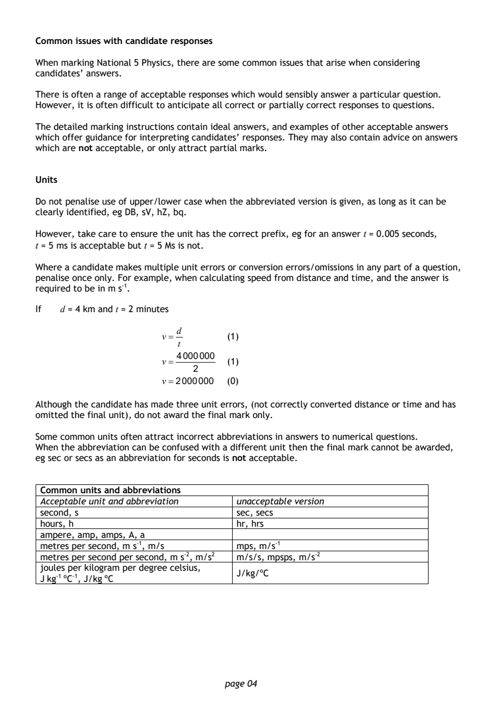
Selectable page text
Common issues with candidate responses
When marking National 5 Physics, there are some common issues that arise when considering
candidates’ answers.
There is often a range of acceptable responses which would sensibly answer a particular question.
However, it is often difficult to anticipate all correct or partially correct responses to questions.
The detailed marking instructions contain ideal answers, and examples of other acceptable answers
which offer guidance for interpreting candidates’ responses. They may also contain advice on answers
which are not acceptable, or only attract partial marks.
Units
Do not penalise use of upper/lower case when the abbreviated version is given, as long as it can be
clearly identified, eg DB, sV, hZ, bq.
However, take care to ensure the unit has the correct prefix, eg for an answer t = 0.005 seconds,
t = 5 ms is acceptable but t = 5 Ms is not.
Where a candidate makes multiple unit errors or conversion errors/omissions in any part of a question,
penalise once only. For example, when calculating speed from distance and time, and the answer is
required to be in ms⁻¹.
If d = 4 km and t = 2 minutes
d
v= (1)
t
4000000
v= (1)
2
v=2000000 (0)
Although the candidate has made three unit errors, (not correctly converted distance or time and has
omitted the final unit), do not award the final mark only.
Some common units often attract incorrect abbreviations in answers to numerical questions.
When the abbreviation can be confused with a different unit then the final mark cannot be awarded,
eg sec or secs as an abbreviation for seconds is not acceptable.
Common units and abbreviations
Acceptable unit and abbreviation unacceptable version
second, s sec, secs
hours, h hr, hrs
ampere, amp, amps, A, a
metres per second, m s⁻¹, m/s mps, m/s⁻¹
metres per second per second, m s⁻², m/s² m/s/s, mpsps, m/s⁻²
joules per kilogram per degree celsius,
J/kg/ºC
J kg⁻¹ ºC⁻¹, J/kg ºC
page 04PDF page 5
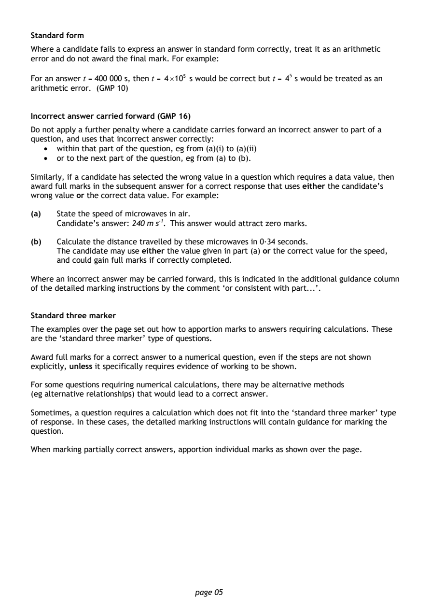
Selectable page text
Standard form
Where a candidate fails to express an answer in standard form correctly, treat it as an arithmetic
error and do not award the final mark. For example:
For an answer t = 400 000 s, then t = 4×10⁵ s would be correct but t = 4⁵ s would be treated as an
arithmetic error. (GMP 10)
Incorrect answer carried forward (GMP 16)
Do not apply a further penalty where a candidate carries forward an incorrect answer to part of a
question, and uses that incorrect answer correctly:
• within that part of the question, eg from (a)(i) to (a)(ii)
• or to the next part of the question, eg from (a) to (b).
Similarly, if a candidate has selected the wrong value in a question which requires a data value, then
award full marks in the subsequent answer for a correct response that uses either the candidate’s
wrong value or the correct data value. For example:
(a) State the speed of microwaves in air.
Candidate’s answer: 240 m s⁻¹. This answer would attract zero marks.
(b) Calculate the distance travelled by these microwaves in 0·34 seconds.
The candidate may use either the value given in part (a) or the correct value for the speed,
and could gain full marks if correctly completed.
Where an incorrect answer may be carried forward, this is indicated in the additional guidance column
of the detailed marking instructions by the comment ‘or consistent with part...’.
Standard three marker
The examples over the page set out how to apportion marks to answers requiring calculations. These
are the ‘standard three marker’ type of questions.
Award full marks for a correct answer to a numerical question, even if the steps are not shown
explicitly, unless it specifically requires evidence of working to be shown.
For some questions requiring numerical calculations, there may be alternative methods
(eg alternative relationships) that would lead to a correct answer.
Sometimes, a question requires a calculation which does not fit into the ‘standard three marker’ type
of response. In these cases, the detailed marking instructions will contain guidance for marking the
question.
When marking partially correct answers, apportion individual marks as shown over the page.
page 05PDF page 6
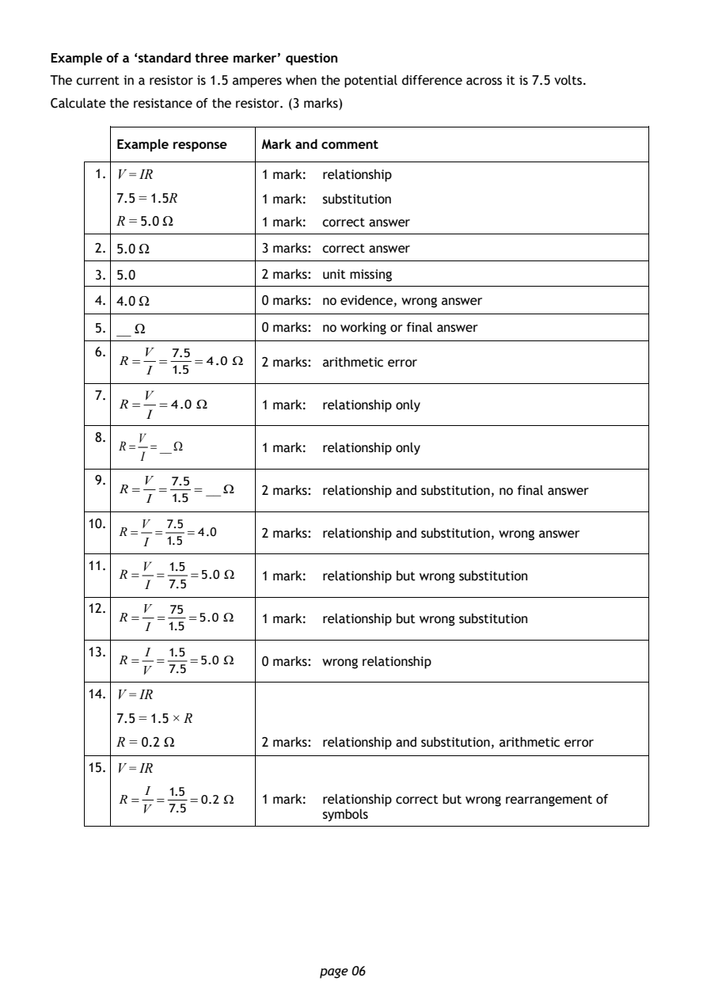
Selectable page text
Example of a ‘standard three marker’ question
The current in a resistor is 1.5 amperes when the potential difference across it is 7.5 volts.
Calculate the resistance of the resistor. (3 marks)
Example response Mark and comment
1. V = IR 1 mark: relationship
7.5 = 1.5R 1 mark: substitution
R = 5.0 Ω 1 mark: correct answer
2. 5.0 Ω 3 marks: correct answer
3. 5.0 2 marks: unit missing
4. 4.0 Ω 0 marks: no evidence, wrong answer
5. __ Ω 0 marks: no working or final answer
6. V 7.5
R = = =4.0 Ω 2 marks: arithmetic error
I 1.5
7. V
R = =4.0 Ω 1 mark: relationship only
I
8. V
R= =__Ω 1 mark: relationship only
I
9. V 7.5
R = = = __Ω 2 marks: relationship and substitution, no final answer
I 1.5
10. V 7.5
R= = =4.0 2 marks: relationship and substitution, wrong answer
I 1.5
11. V 1.5
R= = =5.0 Ω 1 mark: relationship but wrong substitution
I 7.5
12. V 75
R= = =5.0 Ω 1 mark: relationship but wrong substitution
I 1.5
13. I 1.5
R= = =5.0 Ω 0 marks: wrong relationship
V 7.5
14. V = IR
7.5 = 1.5 × R
R = 0.2 Ω 2 marks: relationship and substitution, arithmetic error
15. V = IR
I 1.5
R= = =0.2 Ω 1 mark: relationship correct but wrong rearrangement of
V 7.5
symbols
page 06PDF page 7
Section 1, Question 1Section 1, Question 2Section 1, Question 3Section 1, Question 4Section 1, Question 5Section 1, Question 6Section 1, Question 7Section 1, Question 8Section 1, Question 9Section 1, Question 10Section 1, Question 11Section 1, Question 12Section 1, Question 13Section 1, Question 14Section 1, Question 15Section 1, Question 16Section 1, Question 17Section 1, Question 18Section 1, Question 19Section 1, Question 20Section 1, Question 21Section 1, Question 22Section 1, Question 23Section 1, Question 24Section 1, Question 25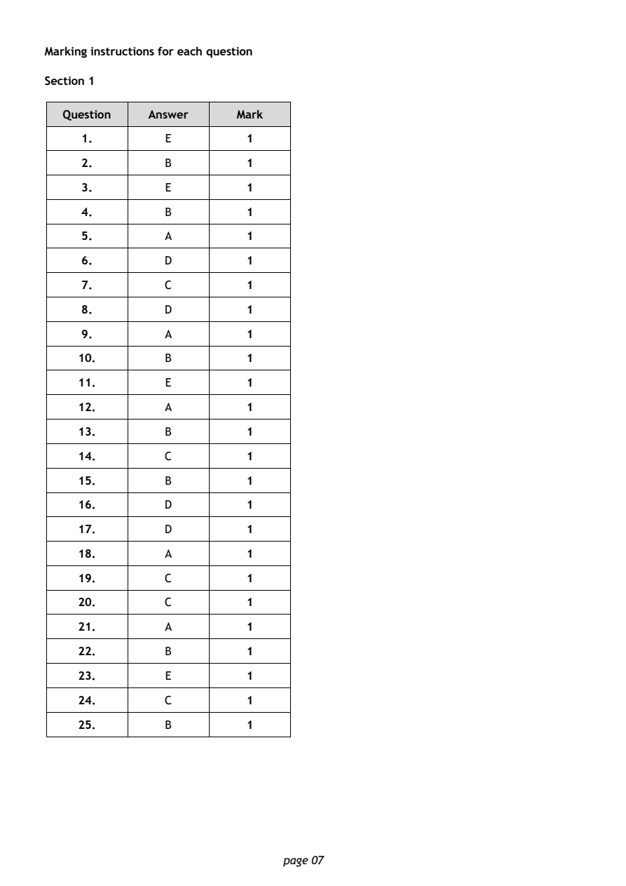
Selectable page text
Marking instructions for each question
Section 1
Question Answer Mark
1. E 1
2. B 1
3. E 1
4. B 1
5. A 1
6. D 1
7. C 1
8. D 1
9. A 1
10. B 1
11. E 1
12. A 1
13. B 1
14. C 1
15. B 1
16. D 1
17. D 1
18. A 1
19. C 1
20. C 1
21. A 1
22. B 1
23. E 1
24. C 1
25. B 1
page 07PDF page 8
Section 2, Question 1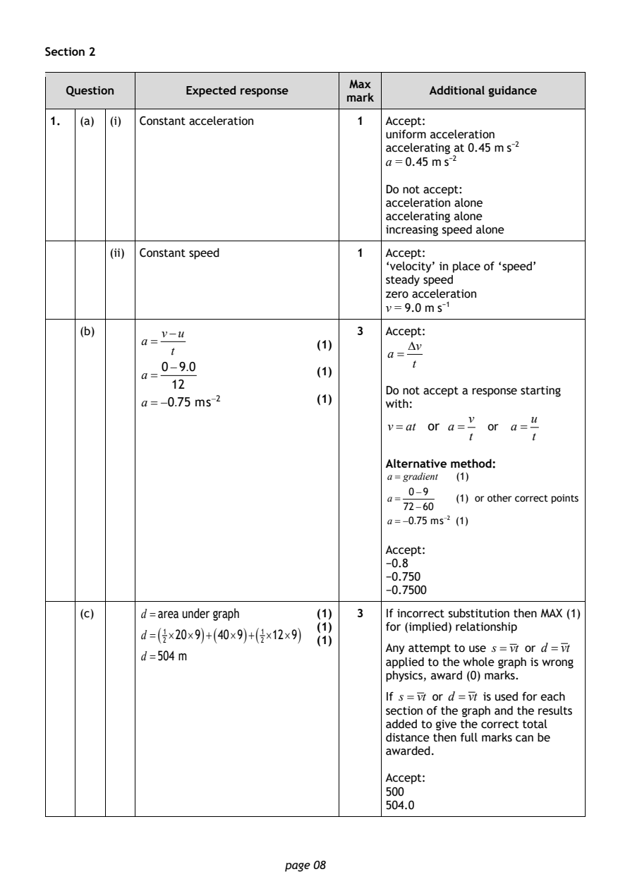
Selectable page text
Section 2
Max
Question Expected response Additional guidance
mark
1. (a) (i) Constant acceleration 1 Accept:
uniform acceleration
accelerating at 0.45 m s⁻²
a = 0.45 m s⁻²
Do not accept:
acceleration alone
accelerating alone
increasing speed alone
(ii) Constant speed 1 Accept:
‘velocity’ in place of ‘speed’
steady speed
zero acceleration
v = 9.0 m s⁻¹
(b) v−u 3 Accept:
a=
(1) ∆v
t a=
0−9.0 t
a= (1)
12
Do not accept a response starting
a=−0.75 ms⁻² (1) with:
v u
v=at or a = or a =
t t
Alternative method:
a=gradient (1)
0−9
a= (1) or other correct points
72−60
a=−0.75 ms⁻² (1)
Accept:
−0.8
−0.750
−0.7500
(c) d =area under graph (1) 3 If incorrect substitution then MAX (1)
(1) for (implied) relationship
d
=( ₂¹×20×9)+(40×9)+(₂¹×12×9)
(1)
Any attempt to use s =vt or d =vt
d =504 m
applied to the whole graph is wrong
physics, award (0) marks.
If s =vt or d =vt is used for each
section of the graph and the results
added to give the correct total
distance then full marks can be
awarded.
Accept:
500
504.0
page 08PDF page 9
Section 2, Question 2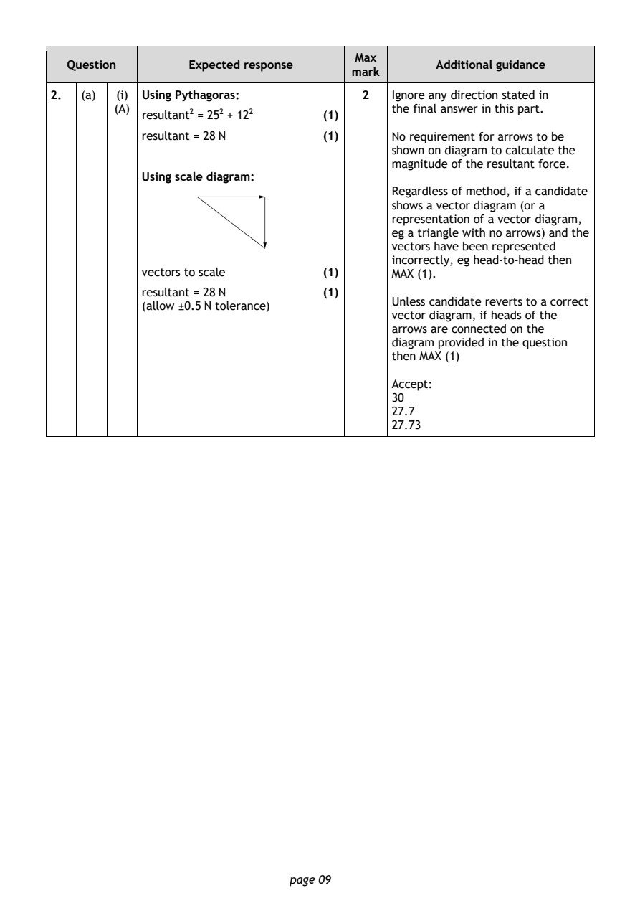
Selectable page text
Max
Question Expected response Additional guidance
mark
2. (a) (i) Using Pythagoras: 2 Ignore any direction stated in
(A) the final answer in this part.
resultant² = 25² + 12² (1)
resultant = 28 N (1) No requirement for arrows to be
shown on diagram to calculate the
magnitude of the resultant force.
Using scale diagram:
Regardless of method, if a candidate
shows a vector diagram (or a
representation of a vector diagram,
eg a triangle with no arrows) and the
vectors have been represented
incorrectly, eg head-to-head then
vectors to scale (1) MAX (1).
resultant = 28 N (1)
Unless candidate reverts to a correct
(allow ±0.5 N tolerance)
vector diagram, if heads of the
arrows are connected on the
diagram provided in the question
then MAX (1)
Accept:
30
27.7
27.73
page 09PDF page 10
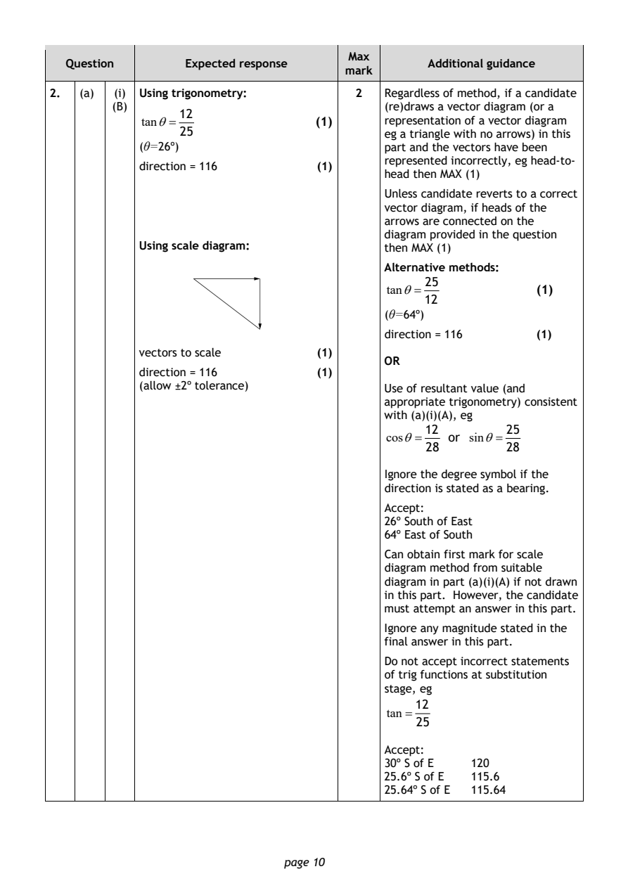
Selectable page text
Max
Question Expected response Additional guidance
mark
2. (a) (i) Using trigonometry: 2 Regardless of method, if a candidate
(B) (re)draws a vector diagram (or a
12
tanθ= (1) representation of a vector diagram
25 eg a triangle with no arrows) in this
(θ=26º) part and the vectors have been
represented incorrectly, eg head-to-
direction = 116 (1)
head then MAX (1)
Unless candidate reverts to a correct
vector diagram, if heads of the
arrows are connected on the
diagram provided in the question
Using scale diagram: then MAX (1)
Alternative methods:
25
tanθ= (1)
12
(θ=64º)
direction = 116 (1)
vectors to scale (1)
OR
direction = 116 (1)
(allow ±2º tolerance) Use of resultant value (and
appropriate trigonometry) consistent
with (a)(i)(A), eg
12 25
cosθ= or sinθ=
28 28
Ignore the degree symbol if the
direction is stated as a bearing.
Accept:
26º South of East
64º East of South
Can obtain first mark for scale
diagram method from suitable
diagram in part (a)(i)(A) if not drawn
in this part. However, the candidate
must attempt an answer in this part.
Ignore any magnitude stated in the
final answer in this part.
Do not accept incorrect statements
of trig functions at substitution
stage, eg
12
tan =
25
Accept:
30º S of E 120
25.6º S of E 115.6
25.64º S of E 115.64
page 10PDF page 11
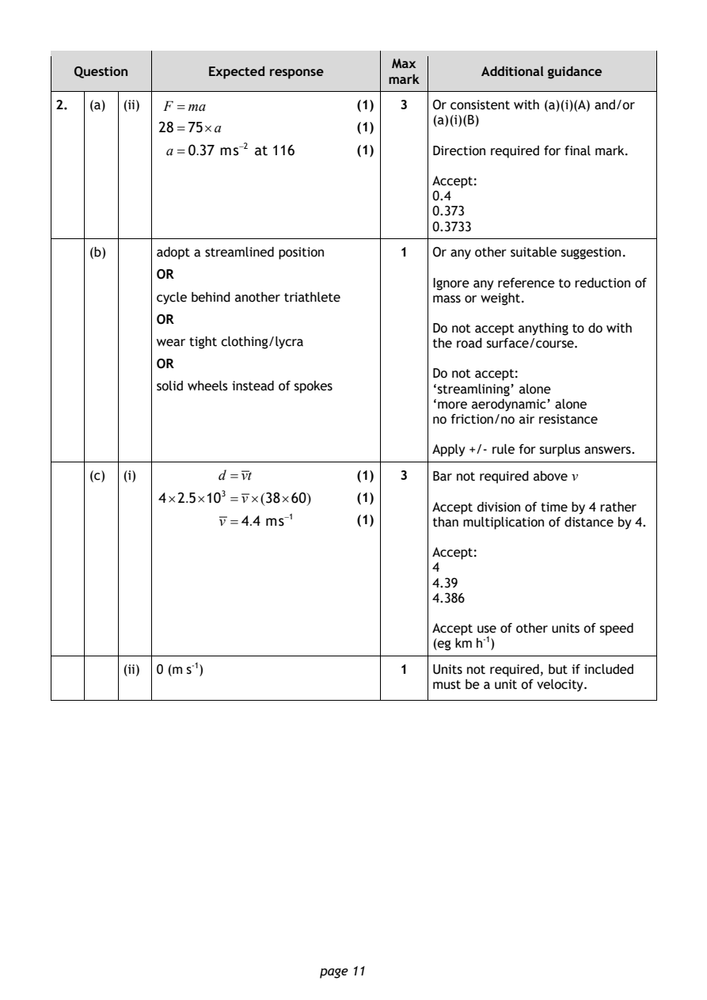
Selectable page text
Max
Question Expected response Additional guidance
mark
2. (a) (ii) F =ma (1) 3 Or consistent with (a)(i)(A) and/or
(a)(i)(B)
28=75×a (1)
a =0.37 ms⁻² at 116 (1) Direction required for final mark.
Accept:
0.4
0.373
0.3733
(b) adopt a streamlined position 1 Or any other suitable suggestion.
OR
Ignore any reference to reduction of
cycle behind another triathlete mass or weight.
OR
Do not accept anything to do with
wear tight clothing/lycra the road surface/course.
OR
Do not accept:
solid wheels instead of spokes ‘streamlining’ alone
‘more aerodynamic’ alone
no friction/no air resistance
Apply +/- rule for surplus answers.
(c) (i) d =vt (1) 3 Bar not required above v
4×2.5×10³ =v×(38×60) (1)
Accept division of time by 4 rather
v =4.4 ms⁻¹ (1) than multiplication of distance by 4.
Accept:
4
4.39
4.386
Accept use of other units of speed
(eg km h⁻¹)
(ii) 0 (m s⁻¹) 1 Units not required, but if included
must be a unit of velocity.
page 11PDF page 12
Section 2, Question 3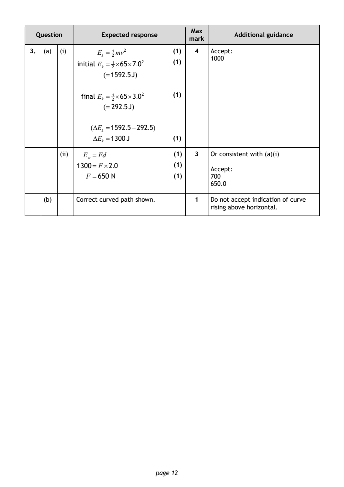
Selectable page text
Max
Question Expected response Additional guidance
mark
3. (a) (i) Eₖ = ₂¹mv² (1) 4 Accept:
1000
initial Eₖ = ₂¹×65×7.0² (1)
(=1592.5J)
final Eₖ = ₂¹×65×3.0² (1)
(=292.5J)
(∆Eₖ =1592.5−292.5)
∆Eₖ =1300J (1)
(ii) E_{w} = Fd (1) 3 Or consistent with (a)(i)
1300= F×2.0 (1)
Accept:
F =650 N (1) 700
650.0
(b) C orrect curved path shown. 1 Do not accept indication of curve
rising above horizontal.
page 12PDF page 13
Section 2, Question 4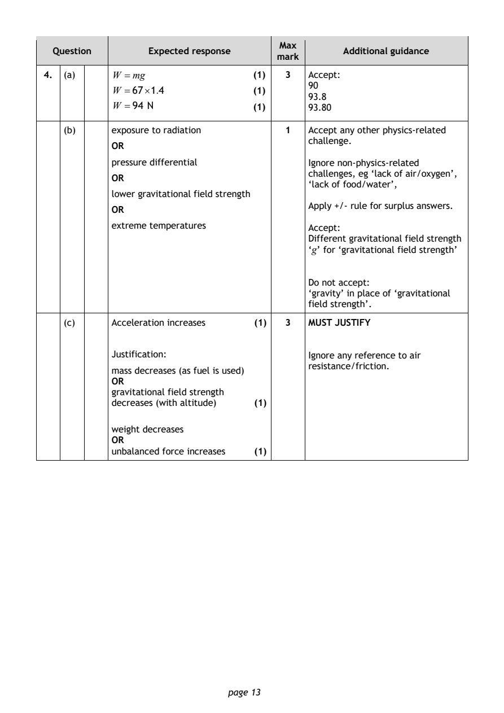
Selectable page text
Max
Question Expected response Additional guidance
mark
4. (a) W =mg (1) 3 Accept:
90
W =67×1.4 (1)
93.8
W =94 N (1) 93.80
(b) exposure to radiation 1 Accept any other physics-related
challenge.
OR
pressure differential Ignore non-physics-related
challenges, eg ‘lack of air/oxygen’,
OR
‘lack of food/water’,
lower gravitational field strength
Apply +/- rule for surplus answers.
OR
extreme temperatures Accept:
Different gravitational field strength
‘g’ for ‘gravitational field strength’
Do not accept:
‘gravity’ in place of ‘gravitational
field strength’.
(c) Acceleration increases (1) 3 MUST JUSTIFY
Justification: Ignore any reference to air
resistance/friction.
mass decreases (as fuel is used)
OR
gravitational field strength
decreases (with altitude) (1)
weight decreases
OR
unbalanced force increases (1)
page 13PDF page 14
Section 2, Question 5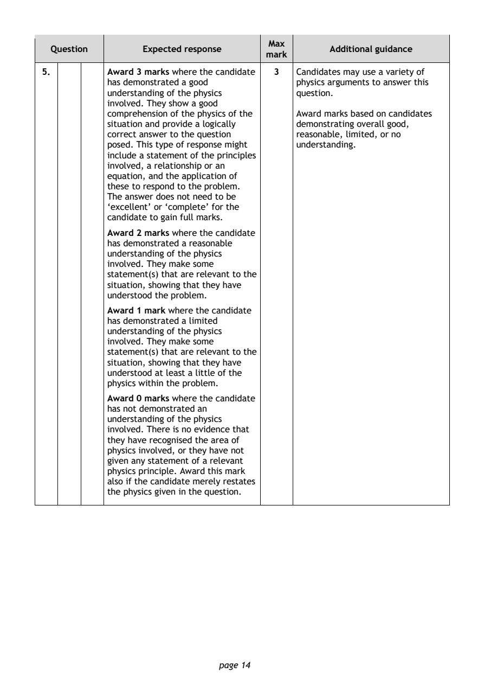
Selectable page text
Max
Question Expected response Additional guidance
mark
5. Award 3 marks where the candidate 3 Candidates may use a variety of
has demonstrated a good physics arguments to answer this
understanding of the physics question.
involved. They show a good
comprehension of the physics of the Award marks based on candidates
situation and provide a logically demonstrating overall good,
correct answer to the question reasonable, limited, or no
posed. This type of response might understanding.
include a statement of the principles
involved, a relationship or an
equation, and the application of
these to respond to the problem.
The answer does not need to be
‘excellent’ or ‘complete’ for the
candidate to gain full marks.
Award 2 marks where the candidate
has demonstrated a reasonable
understanding of the physics
involved. They make some
statement(s) that are relevant to the
situation, showing that they have
understood the problem.
Award 1 mark where the candidate
has demonstrated a limited
understanding of the physics
involved. They make some
statement(s) that are relevant to the
situation, showing that they have
understood at least a little of the
physics within the problem.
Award 0 marks where the candidate
has not demonstrated an
understanding of the physics
involved. There is no evidence that
they have recognised the area of
physics involved, or they have not
given any statement of a relevant
physics principle. Award this mark
also if the candidate merely restates
the physics given in the question.
page 14PDF page 15
Section 2, Question 6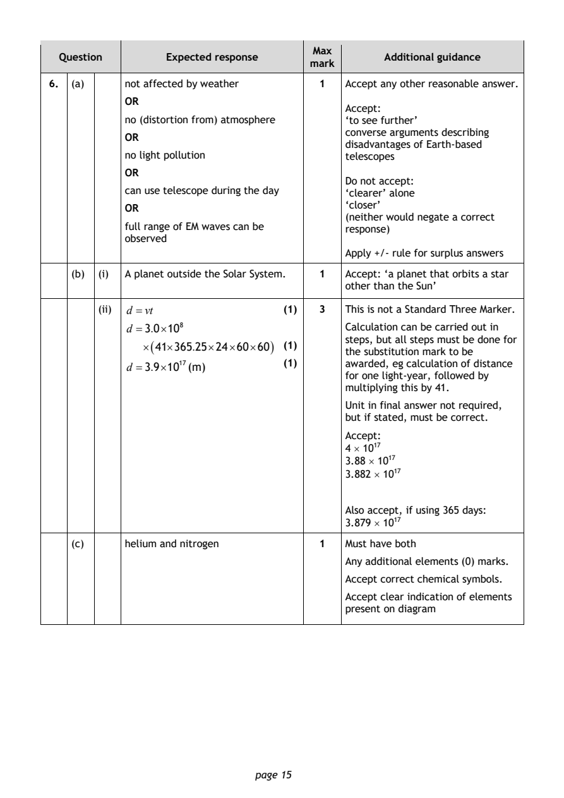
Selectable page text
Max
Question Expected response Additional guidance
mark
6. (a) not affected by weather 1 Accept any other reasonable answer.
OR
Accept:
no (distortion from) atmosphere ‘to see further’
converse arguments describing
OR
disadvantages of Earth-based
no light pollution telescopes
OR
Do not accept:
can use telescope during the day ‘clearer’ alone
‘closer’
OR
(neither would negate a correct
full range of EM waves can be response)
observed
Apply +/- rule for surplus answers
(b) (i) A planet outside the Solar System. 1 Accept: ‘a planet that orbits a star
other than the Sun’
(ii) d =vt (1) 3 This is not a Standard Three Marker.
d =3.0×10⁸ Calculation can be carried out in
steps, but all steps must be done for
×(41×365.25×24×60×60) (1)
the substitution mark to be
d =3.9×10¹⁷(m) (1) awarded, eg calculation of distance
for one light-year, followed by
multiplying this by 41.
Unit in final answer not required,
but if stated, must be correct.
Accept:
4 × 10¹⁷
3.88 × 10¹⁷
3.882 × 10¹⁷
Also accept, if using 365 days:
3.879 × 10¹⁷
(c) helium and nitrogen 1 Must have both
Any additional elements (0) marks.
Accept correct chemical symbols.
Accept clear indication of elements
present on diagram
page 15PDF page 16
Section 2, Question 7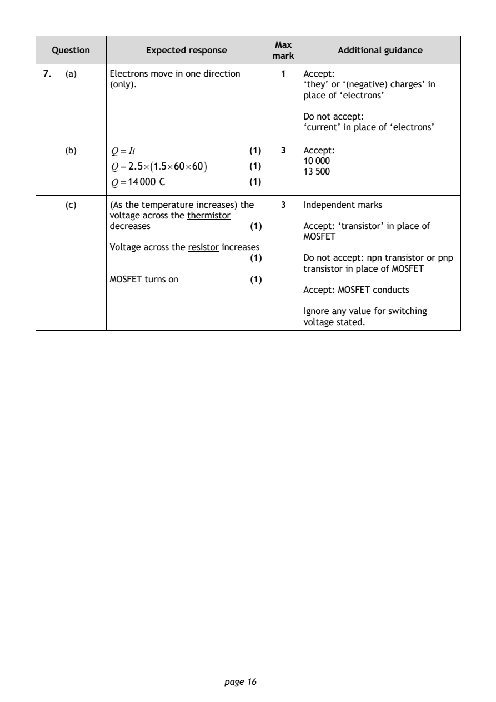
Selectable page text
Max
Question Expected response Additional guidance
mark
7. (a) Electrons move in one direction 1 Accept:
(only). ‘they’ or ‘(negative) charges’ in
place of ‘electrons’
Do not accept:
‘current’ in place of ‘electrons’
(b) Q= It (1) 3 Accept:
Q=2.5×(1.5×60×60) (1)
10 000
13 500
Q=14000 C (1)
(c) (As the temperature increases) the 3 Independent marks
voltage across the thermistor
decreases (1) Accept: ‘transistor’ in place of
MOSFET
Voltage across the resistor increases
(1) Do not accept: npn transistor or pnp
transistor in place of MOSFET
MOSFET turns on (1)
Accept: MOSFET conducts
Ignore any value for switching
voltage stated.
page 16PDF page 17
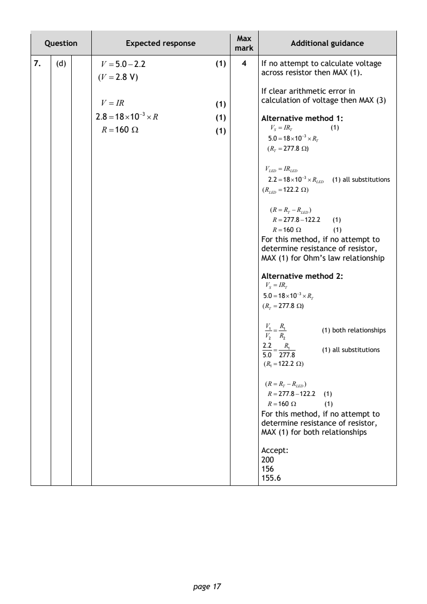
Selectable page text
Max
Question Expected response Additional guidance
mark
7. (d) V =5.0−2.2 (1) 4 If no attempt to calculate voltage
across resistor then MAX (1).
(V =2.8 V)
If clear arithmetic error in
V = IR (1) calculation of voltage then MAX (3)
2.8=18×10⁻³×R (1) Alternative method 1:
R=160 Ω (1) V_{S} =IR_{T} (1)
5.0=18×10⁻³×R_{T}
(R_{T} =277.8 Ω)
V_{L}_{E}_{D} =IR_{L}_{E}_{D}
2.2=18×10⁻³×R_{L}_{E}_{D} (1) all substitutions
(R_{L}_{E}_{D} =122.2 Ω)
(R=R_{T} −R_{L}_{E}_{D})
R=277.8−122.2 (1)
R=160 Ω (1)
For this method, if no attempt to
determine resistance of resistor,
MAX (1) for Ohm’s law relationship
Alternative method 2:
V_{S} =IR_{T}
5.0=18×10⁻³×R_{T}
(R_{T} =277.8 Ω)
V₁ R₁
= (1) both relationships
V₂ R₂
2.2 R₁
= (1) all substitutions
5.0 277.8
(R₁=122.2 Ω)
(R=R_{T} −R_{L}_{E}_{D})
R=277.8−122.2 (1)
R=160 Ω (1)
For this method, if no attempt to
determine resistance of resistor,
MAX (1) for both relationships
Accept:
200
156
155.6
page 17PDF page 18
Section 2, Question 8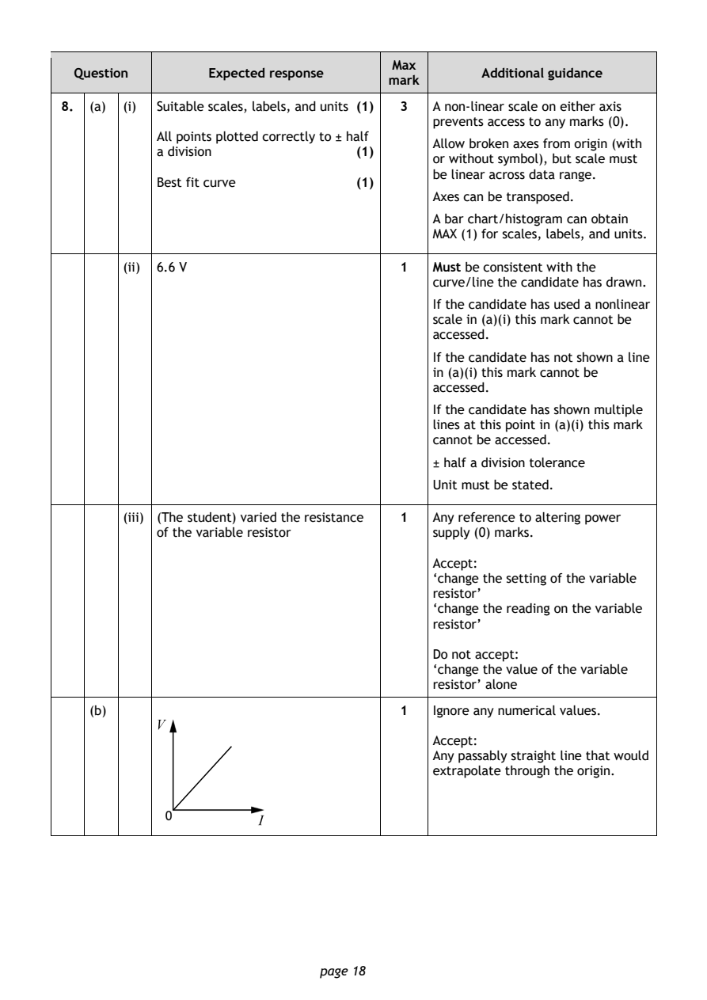
Selectable page text
Max
Question Expected response Additional guidance
mark
8. (a) (i) Suitable scales, labels, and units (1) 3 A non-linear scale on either axis
prevents access to any marks (0).
All points plotted correctly to ± half
Allow broken axes from origin (with
a division (1)
or without symbol), but scale must
be linear across data range.
Best fit curve (1)
Axes can be transposed.
A bar chart/histogram can obtain
MAX (1) for scales, labels, and units.
(ii) 6.6 V 1 Must be consistent with the
curve/line the candidate has drawn.
If the candidate has used a nonlinear
scale in (a)(i) this mark cannot be
accessed.
If the candidate has not shown a line
in (a)(i) this mark cannot be
accessed.
If the candidate has shown multiple
lines at this point in (a)(i) this mark
cannot be accessed.
± half a division tolerance
Unit must be stated.
(iii) (The student) varied the resistance 1 Any reference to altering power
of the variable resistor supply (0) marks.
Accept:
‘change the setting of the variable
resistor’
‘change the reading on the variable
resistor’
Do not accept:
‘change the value of the variable
resistor’ alone
(b) 1 Ignore any numerical values.
Accept:
Any passably straight line that would
extrapolate through the origin.
page 18PDF page 19
Section 2, Question 9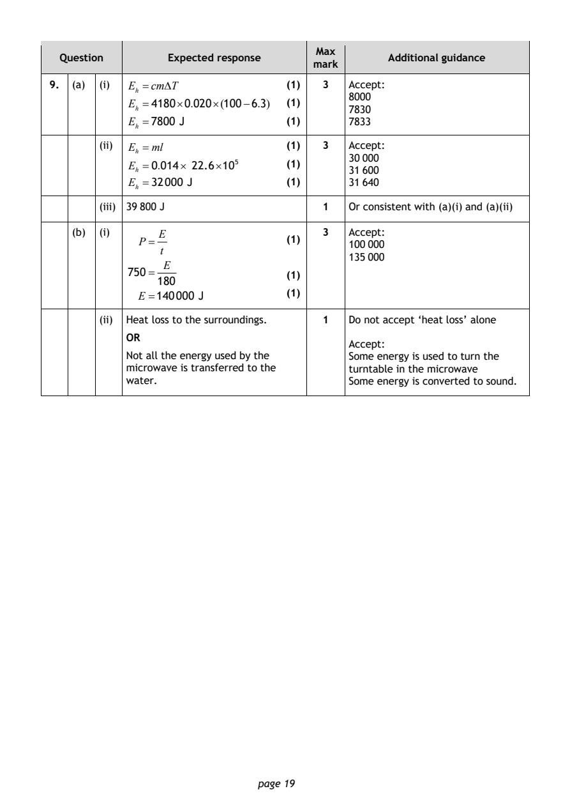
Selectable page text
Max
Question Expected response Additional guidance
mark
9. (a) (i) Eₕ =cm∆T (1) 3 Accept:
8000
Eₕ =4180×0.020×(100−6.3) (1)
7830
Eₕ =7800 J (1) 7833
(ii) Eₕ =ml (1) 3 Accept:
30 000
Eₕ =0.014× 22.6×10⁵ (1)
31 600
Eₕ =32000 J (1) 31 640
(iii) 39 800 J 1 Or consistent with (a)(i) and (a)(ii)
(b) (i) E 3 Accept:
P= (1)
100 000
t
135 000
E
750=
(1)
180
E =140000 J (1)
(ii) Heat loss to the surroundings. 1 Do not accept ‘heat loss’ alone
OR
Accept:
Not all the energy used by the Some energy is used to turn the
microwave is transferred to the turntable in the microwave
water. Some energy is converted to sound.
page 19PDF page 20
Section 2, Question 10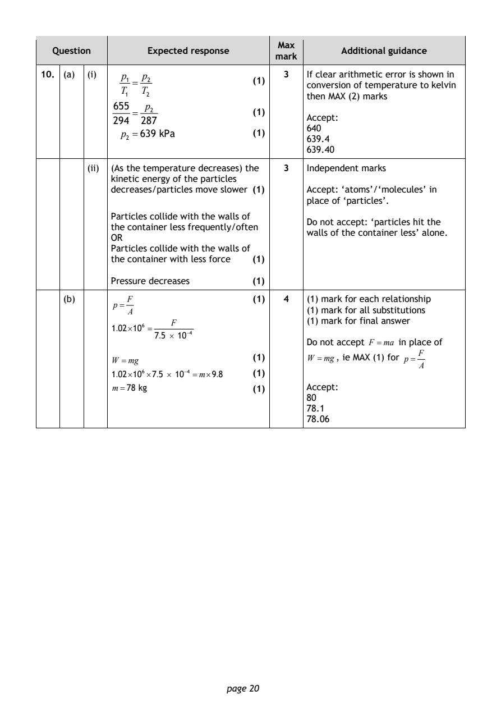
Selectable page text
Max
Question Expected response Additional guidance
mark
10. (a) (i) p₁ p₂ 3 If clear arithmetic error is shown in
= (1)
conversion of temperature to kelvin
T₁ T₂
then MAX (2) marks
655 p₂
= (1)
Accept:
294 287
640
p₂ =639 kPa (1)
639.4
639.40
(ii) (As the temperature decreases) the 3 Independent marks
kinetic energy of the particles
decreases/particles move slower (1) Accept: ‘atoms’/‘molecules’ in
place of ‘particles’.
Particles collide with the walls of
Do not accept: ‘particles hit the
the container less frequently/often
walls of the container less’ alone.
OR
Particles collide with the walls of
the container with less force (1)
Pressure decreases (1)
(b) F (1) 4 (1) mark for each relationship
p=
A (1) mark for all substitutions
(1) mark for final answer
1.02×10⁶ =
F
7.5 × 10⁻⁴
Do not accept F =ma in place of
F
W =mg (1) W =mg, ie MAX (1) for p=
A
1.02×10⁶×7.5 × 10⁻⁴ =m×9.8 (1)
m=78 kg (1) Accept:
80
78.1
78.06
page 20PDF page 21
Section 2, Question 11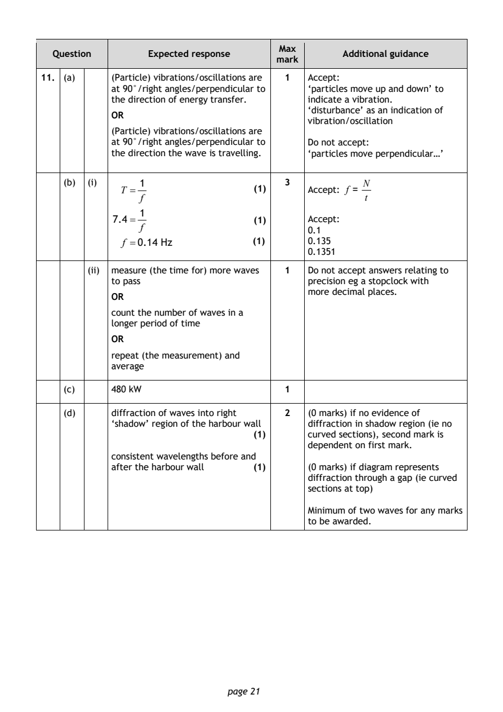
Selectable page text
Max
Question Expected response Additional guidance
mark
11. (a) (Particle) vibrations/oscillations are 1 Accept:
at 90°/right angles/perpendicular to ‘particles move up and down’ to
the direction of energy transfer. indicate a vibration.
‘disturbance’ as an indication of
OR
vibration/oscillation
(Particle) vibrations/oscillations are
at 90°/right angles/perpendicular to Do not accept:
the direction the wave is travelling. ‘particles move perpendicular…’
(b) (i) 1 3 N
T = (1) Accept: f =
f t
1
7.4 = (1) Accept:
f
0.1
f =0.14 Hz (1) 0.135
0.1351
(ii) measure (the time for) more waves 1 Do not accept answers relating to
to pass precision eg a stopclock with
more decimal places.
OR
count the number of waves in a
longer period of time
OR
repeat (the measurement) and
average
(c) 480 kW 1
(d) diffraction of waves into right 2 (0 marks) if no evidence of
‘shadow’ region of the harbour wall diffraction in shadow region (ie no
(1) curved sections), second mark is
dependent on first mark.
consistent wavelengths before and
after the harbour wall (1) (0 marks) if diagram represents
diffraction through a gap (ie curved
sections at top)
Minimum of two waves for any marks
to be awarded.
page 21PDF page 22
Section 2, Question 12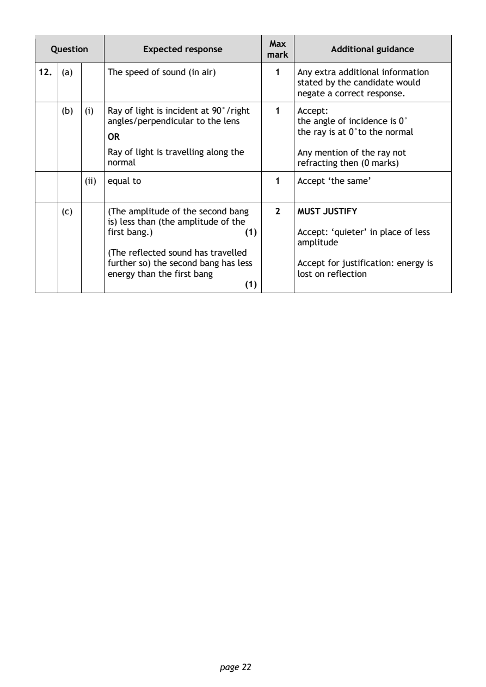
Selectable page text
Max
Question Expected response Additional guidance
mark
12. (a) The speed of sound (in air) 1 Any extra additional information
stated by the candidate would
negate a correct response.
(b) (i) Ray of light is incident at 90°/right 1 Accept:
angles/perpendicular to the lens the angle of incidence is 0°
the ray is at 0°to the normal
OR
Ray of light is travelling along the Any mention of the ray not
normal refracting then (0 marks)
(ii) equal to 1 Accept ‘the same’
(c) (The amplitude of the second bang 2 MUST JUSTIFY
is) less than (the amplitude of the
first bang.) (1) Accept: ‘quieter’ in place of less
amplitude
(The reflected sound has travelled
further so) the second bang has less Accept for justification: energy is
energy than the first bang lost on reflection
(1)
page 22PDF page 23
Section 2, Question 13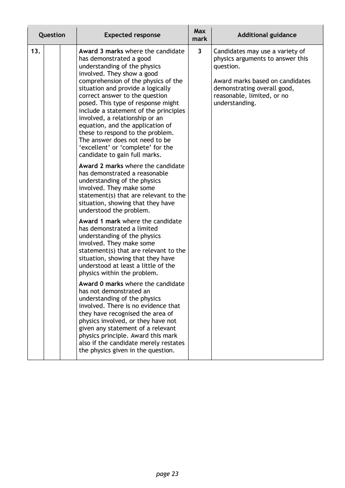
Selectable page text
Max
Question Expected response Additional guidance
mark
13. Award 3 marks where the candidate 3 Candidates may use a variety of
has demonstrated a good physics arguments to answer this
understanding of the physics question.
involved. They show a good
comprehension of the physics of the Award marks based on candidates
situation and provide a logically demonstrating overall good,
correct answer to the question reasonable, limited, or no
posed. This type of response might understanding.
include a statement of the principles
involved, a relationship or an
equation, and the application of
these to respond to the problem.
The answer does not need to be
‘excellent’ or ‘complete’ for the
candidate to gain full marks.
Award 2 marks where the candidate
has demonstrated a reasonable
understanding of the physics
involved. They make some
statement(s) that are relevant to the
situation, showing that they have
understood the problem.
Award 1 mark where the candidate
has demonstrated a limited
understanding of the physics
involved. They make some
statement(s) that are relevant to the
situation, showing that they have
understood at least a little of the
physics within the problem.
Award 0 marks where the candidate
has not demonstrated an
understanding of the physics
involved. There is no evidence that
they have recognised the area of
physics involved, or they have not
given any statement of a relevant
physics principle. Award this mark
also if the candidate merely restates
the physics given in the question.
page 23PDF page 24
Section 2, Question 14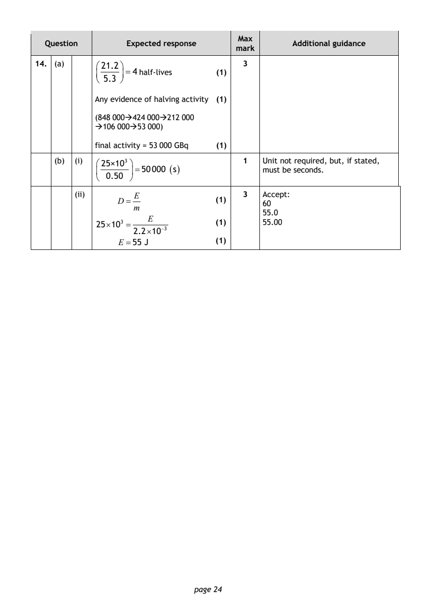
Selectable page text
Max
Question Expected response Additional guidance
mark
14. (a) 21.2 3
=4half-lives (1)
5.3
Any evidence of halving activity (1)
(848 000424 000212 000
106 00053 000)
final activity = 53 000 GBq (1)
(b) (i) 25×10³ 1 Unit not required, but, if stated,
=50000 (s) must be seconds.
0.50
(ii) E 3 Accept:
D= (1)
60
m
55.0
E
25×10³ = (1) 55.00
2.2×10⁻³
E =55 J (1)
page 24PDF page 25
Section 2, Question 15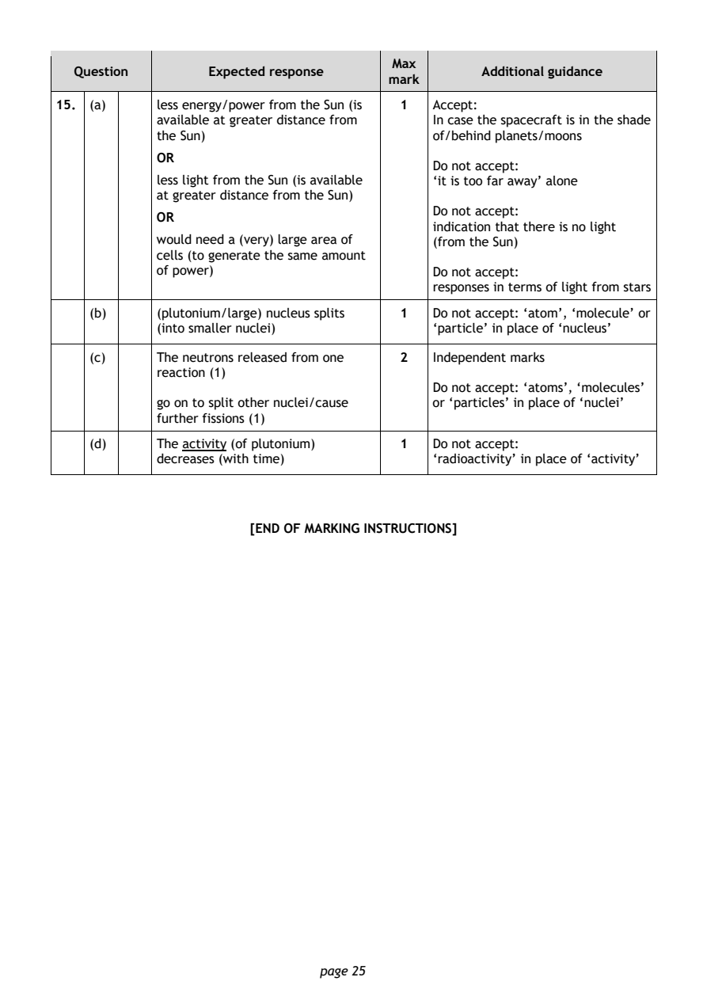
Selectable page text
Max
Question Expected response Additional guidance
mark
15. (a) less energy/power from the Sun (is 1 Accept:
available at greater distance from In case the spacecraft is in the shade
the Sun) of/behind planets/moons
OR
Do not accept:
less light from the Sun (is available ‘it is too far away’ alone
at greater distance from the Sun)
Do not accept:
OR
indication that there is no light
would need a (very) large area of (from the Sun)
cells (to generate the same amount
of power) Do not accept:
responses in terms of light from stars
(b) (plutonium/large) nucleus splits 1 Do not accept: ‘atom’, ‘molecule’ or
(into smaller nuclei) ‘particle’ in place of ‘nucleus’
(c) The neutrons released from one 2 Independent marks
reaction (1)
Do not accept: ‘atoms’, ‘molecules’
go on to split other nuclei/cause or ‘particles’ in place of ‘nuclei’
further fissions (1)
(d) The activity (of plutonium) 1 Do not accept:
decreases (with time) ‘radioactivity’ in place of ‘activity’
[END OF MARKING INSTRUCTIONS]
page 25